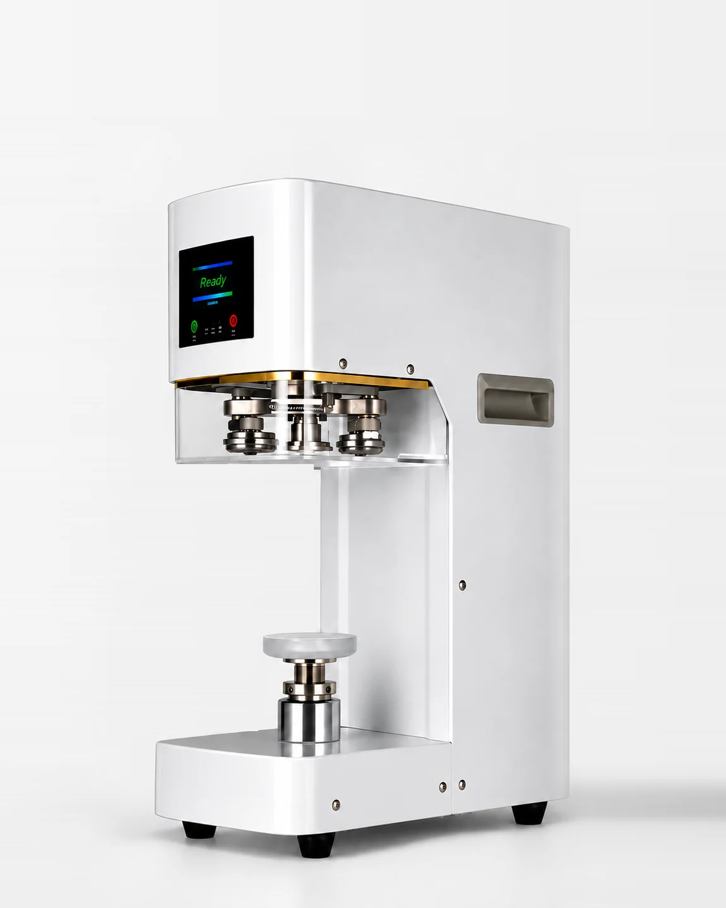

Mindegyiknél telefonon a nagy cím van felül és alatta a kép, asztali szélességen (900 px felett) egymás mellett vannak. Méretezd az ablakot, hogy lásd a váltást.
Betöltöd, a gép lezárja. Elektromos, automatikus zárás italüzleteknek.

Jegeskávé, limonádé, desszert: betöltöd, és két másodperc múlva kész.
Automatikus emelőtalp, stabil zárás, fehér vagy fekete gépház.
210–1000 ml-es dobozok adaptercserével, 220 V-ról, pultra tehető.
450 000 FT + ÁFA
Próbazárással, 1 év garanciával, online műszaki támogatással.